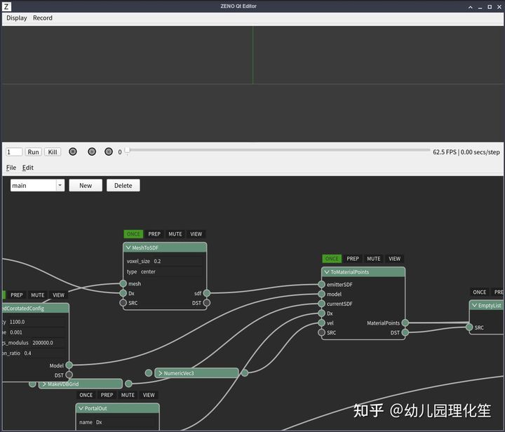
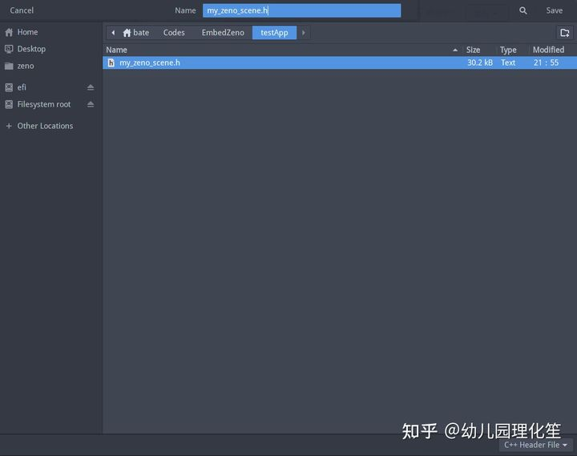
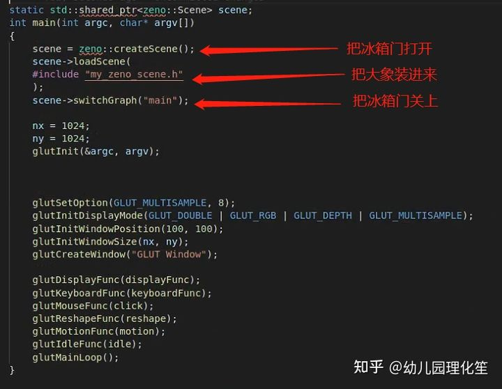
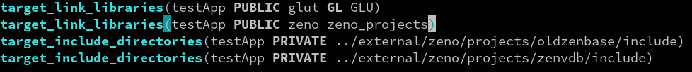

在项目中嵌入式使用ZENO编辑器制作的计算图¶
ZENO人， ZENO魂， ZENO的技术very的纯。 今天为大家带来的是zeno计算图往其他项目中嵌入式使用的教程。¶
人们都以为zeno是仅仅像blender， Houdini那样的一个封闭的软件使用环境，虽然节点化使得算法和仿真过程的开发非常灵活便捷，但似乎给人一种只能在zeno编辑器里用的错觉，就像blender的插件没法在blender外面使用一样，难以植入现有的项目里。
然而事实并非如此，zeno经过大神archibate和一众zeno工程师的精心开发，是一个稳健，灵活， 可移植性极强的工具链系统（我们甚至在安卓手机上跑过zeno），zeno的pyqt编辑器是zeno的冰山一角，并不是他的全部。
本期我们就探索如何通过导出基于zeno节点编辑器开发的GPU算法，在一个独立于zeno编辑器的C++程序里调用ZENO的计算图实现一个类似游戏的三维可交互软体仿真。
首先，我们打开官方提供的节点图lowResMPM.zsg：
可以看到，这里存在着ONCE和PREP等tag，而这些仅仅对于编辑器中的使用环境，在嵌入式的场景里，我们这些tag是不起作用的（比如这个案例中是由GLUT的回调函数调用），因此无法在嵌入式环境下使用这些tag。解决方法是：
我们把带ONCE的节点输出端口套上CachedOnce：

不过，实际上只需要在一条链的最末尾加上CachedOnce就可以了，这也是CachedOnce比ONCE tag方便的地方：前面整条链都只会执行一遍（早和心欣说这样比较方便了，他不信！by 心欣：擦， 各有优劣啊！）
用For循环节点来控制substep运算：

这里我们使用区间for循环，直接指定5个substep了。
PREP节点则放到EndFor后面
然后就是重点的部分，VIEW tag在官方编辑器中代表送到可视化管线的操作。但是现在嵌入同理，我们也可以用SubInput从外部往zeno图里传数据，比如鼠标的拖动。式的环境下，我们希望把计算得出的结果送到外面调用该图的C++代码中，交给OpenGL来渲染。为了做到这一点，我们可以把main图看做子图，把所有需要从送到外部的数据，连到SubOutput上。
注意， 此处我们甚至连物体的质心坐标都使用PrimitiveReduction节点求了后顺便传递出去。 从而可以提供给外部系统进行拾取范围检测，或者用来绘制其它一些标记物（作用力箭头）

在嵌入式和子图中，所有的SubOutput所在的链都会被执行。
同理，我们也可以用“SubInput”示意从外部往zeno图里传数据，比如鼠标的状态信息：
可以看到这里我们使用了一个IfElse节点作为判断，SubInput的hasValue端口输出的是一个boolean类型对象。如果SubInput有输入，则使用；如果没有输入，则默认为（0，0，0）。之所以这样做是因为SubInput只有在嵌入式环境下有效，为了在zeno编辑器中调试，可以指定一个默认数值。

现在让我们看看所谓的“外面”，这时是怎么做相应调用的：

可以看到这里首先是通过setGraphInput传入了鼠标提供的作用力矢量（作为NumericVec3），然后调用了applyGraph执行计算。再根据getGraphOutput按获取图中的输出端口（这里的名字”oPig”, “oBowl”和之前图里的SubOutput是一一对应的）。
然后，就是调用OpenGL的API来绘制图形，可以看到obj2和obj3是zeno::PrimitiveObject类型，可以利用attr<T>(“name”)[i]来获取第i个粒子，类型为T，名字为name的属性值。
当我们编辑完算法图后， 我们可以直接在编辑器中运行， 查看各种参数下的运行的效果
当我们在这里反复运行调整好系统的参数后， 要把zeno计算图嵌入到C++中使用非常简单，我们只需要原地按下Ctrl-Shift-E（或者在菜单中File->Export也是可以的）
选择导出到我们“外面”的工程文件夹里，比如就叫my_zeno_scene.h。
然后在main函数的最前面，只要用装大象三步法， 就能够把zeno的计算图进行导入：
（这里如果你打开my_zeno_scene.h一看就会发现里面其实是一个json字符串……而loadScene只是从这个字符串里面加载图而已，并没有什么特别的）
其中scene变量的定义和所需的头文件如下：

当然，也不要忘了在cmake里链接zeno和zeno的各个扩展模块：
在每一个画面的计算中， 程序对于zeno图的调用如下：

编译后运行， 由于此时系统会把mouse的参数传递给计算图， 我们就能得到交互式运行的结果了：
那么王鑫磊同学开发这套MPM算法性能有多高呢？这里有16万个粒子，在RTX 2080上达到了实时运行和与玩家的输入进行交互。

在这整个搭建playable的实时弹性猪头交互的案例中， ZENO做到的最好的一点就是
“所见即所得”：可视化编程是看得见的， 可视化编程调试的结果是可以立刻看见的， 所需要的艺术效果的反复调试是可以快速执行的， 以及最终， zeno的工具流程即保证了嵌入式流程的简便性， 也保证了结果和软件编辑器中调制出来的高度一致。
请问：
使用zeno软件开发嵌入式的物理交互计算，
需不需要懂物理啊？！— 不需要！
需不需要懂编程啊？！— 不需要！
只要看了懂教程， 依葫芦画瓢， 展开想象力， 就可以给自己的想象插上翅膀。
所需要的， 只是自己的审美和对于艺术的反复追求。
正如皮克斯说过的： 艺术挑战技术， 技术启发艺术。 zeno工具和zeno工具人们， 将孜孜不倦地在科艺融合的道路上做好艺术家们，工程师的打工仔，
For the Imagineer Inside you！
ZENO本体和该展示性项目也已经全部开源
项目本体地址：https://github.com/zenustech/zeno
嵌入式案例地址：https://github.com/zenustech/zeno_embed_demo
#ZENO#